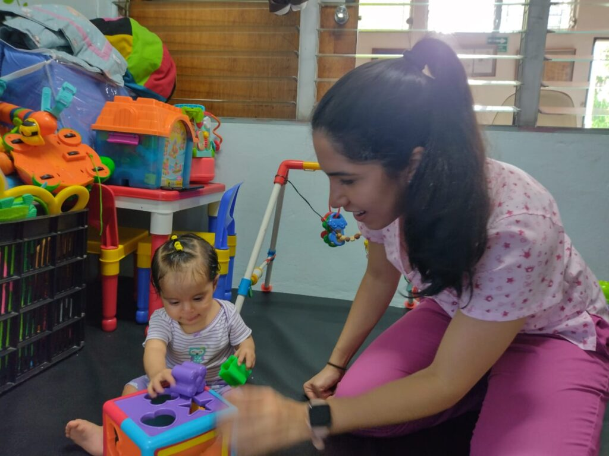

Explore events organized by community partners

Organized by: BAC Credomatic
Published: September 21st, 2026
Location: information in the website
Fundación Vínculo de Amor trabaja recuperando niños y niñas con desnutrición leve, moderada y severa en El Salvador. Lo hacemos con una alimentación nutritiva y balanceada bajo los requerimientos y normativas que las autoridades de salud establezcan.
Learn More